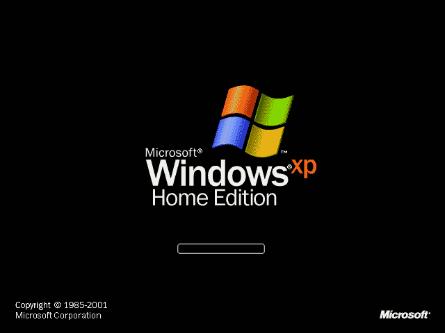

Lançado em 25 de outubro de 2001, o Windows XP é um sistema operacional desenvolvido e comercializado pela gigante dos softwares, Microsoft. O nome “XP” deriva da palavra “experience”. Antes de seu lançamento, havia a possibilidade do usuário optar pelo Windows ME, que era mais bonito visualmente e mais fácil de trabalhar, ou pelo Windows 2000, mais estável, confiável e seguro. O Windows XP uniu o que havia de melhor nos sistemas anteriores a ele: a beleza de um e a segurança de outro. O sistema operacional possui cerca de 400 milhões de cópias em uso atualmente, é o mais usado em todo o mundo. Basicamente, existem duas versões para o Windows XP: Home e Professional. A versão Home é destinada a usuários domésticos, contando com recursos voltados para esse público: multimídia, reprodução de DVDs, ferramentas de vídeo, etc. Já a versão Professional, destinada ao uso corporativo, conta com ferramentas e recursos mais avançados. Entre vários outros recursos, o Windows XP Professional oferece a vantagem de trabalhar com dois processadores, permite o controle de pastas e arquivos em partições NTFS, oferece a possibilidade de trabalhar em um computador remoto, etc. Além dessas duas versões, existem outras menos expressivas, como o Windows XP Media Center Edition, Windows XP Embedded, Windows XP Starter Edition, etc. A versão Starter Edition foi criada pela Microsoft com o fim de combater a pirataria presente em países emergentes, como Rússia, Brasil e México. Realmente, seu preço é bem menor em relação às outras versões, no entanto, possui uma série de limitações, como por exemplo, o fato de só poder abrir três janelas ao mesmo tempo para cada programa. O Windows XP foi substituído pelo Windows Vista, lançado em 30 de Janeiro de 2007, contudo, grande parte dos usuários continua optando pelo sistema operacional mais antigo, afirmando que o XP possui uma estabilidade e eficiência bem superior ao Windows Vista. Estima-se que seja necessário de 5 a 7 anos para que o Vista alcance a marca de vendas do Windows XP, Publicado por Tiago Dantas.
Windows 7 foi uma versão do Microsoft Windows, uma série de sistemas operativos produzidos pela Microsoft para uso em computadores pessoais, incluindo computadores domésticos e empresariais, laptops, tablets e PCs de centros de mídia, entre outros.[4] Windows 7 foi lançado para empresas no dia 22 de julho de 2009, e começou a ser vendido livremente para usuários comuns às 00h00 do dia 22 de outubro de 2009, menos de três anos depois do lançamento de seu predecessor, Windows Vista. Pouco mais de três anos depois, o seu sucessor, Windows 8, foi lançado em 26 de outubro de 2012. Diferente do Windows Vista, que introduziu um grande número de recursos novos (principalmente com a introdução da nova interface Windows Aero), o Windows 7 foi uma atualização mais modesta e focada para ser mais eficiente, limpa e mais prática de usar, com a intenção de torná-lo totalmente compatível com aplicações e hardwares com os quais o Windows Vista já era compatível. Apresentações dadas pela companhia no começo de 2008 mostraram um "Shell" novo, com uma barra de tarefas mais larga e que agora mostra ícones dos programas como atalhos, um novo Menu Iniciar que expande lateralmente mostrando os arquivos que já foram abertos pelo programa, um sistema de "network" chamada de "HomeGroup", e aumento na performance ao abrir programas e ao inicializar o Windows e uma nova tela de boot. Algumas aplicações que foram incluídas em lançamentos anteriores do Windows, como o Calendário do Windows, Windows Mail, Windows Movie Maker e Windows Photo Gallery não serão incluídos no Windows 7 — estes são oferecidos separadamente como parte gratuita do Windows Essentials, para download gratuito. O Windows 7 recebeu diversos elogios da crítica, com vários os críticos considerando o sistema como uma grande melhoria em relação ao seu antecessor, o Windows Vista, principalmente por causa de seu desempenho melhorado, sua interface mais intuitiva (com elogios dedicados à nova barra de tarefas), redução pop-ups relacionados ao Controle de Conta de Usuário e outras melhorias gerais da plataforma. O Windows 7 foi um grande sucesso para a Microsoft; em apenas seis meses, mais de 100 milhões de cópias foram vendidas em todo o mundo, esse número aumentando para mais de 630 milhões de licenças até julho de 2012. Em 1.º de fevereiro de 2018, o Windows 7 perdeu o posto de sistema operacional mais popular para o Windows 10, a versão mais recente do sistema, que havia sido lançada em 29 de julho de 2015.[5] Em 10 de setembro de 2018, a Microsoft lançou a público a notícia que entre 2020 e 2023, iriam ser distribuídas Atualizações Estendidas de Segurança (ESU) para todos os clientes do Windows 7 nas versões Professional e Enterprise no Licenciamento por Volume. Dessa forma, as empresas teriam um pouco mais de tempo de migrar para outro sistema operacional. A Microsoft cobrou por dispositivo, e o preço ficou mais alto a cada ano.